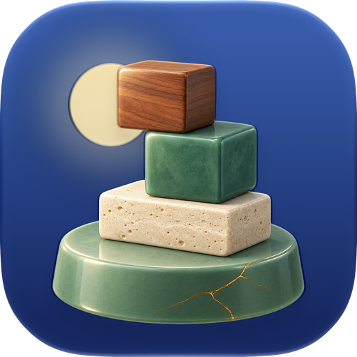

Balance ItSon güncelleme: 20 Ekim 2026 · iPhone ve iPad için Balance It uygulaması için geçerlidir
Hiçbiri. Hiçbir kişisel bilgiyi ya da kullanım verisini toplamıyor, almıyor, saklamıyor, paylaşmıyor ve satmıyoruz. Uygulamada reklam, analiz, çökme raporlama ya da takip hizmeti bulunmaz; reklam kimliği (IDFA) kullanılmaz. Ayarlar ekranında isteğe bağlı analiz ve kişiselleştirilmiş reklam satırları görünür; ikisi de kapalıdır ve bu sürümde yer almaz.
Oyununu sürdürebilmek için uygulama cihazında şunları saklar:
Bunlar cihazından hiç çıkmaz ve uygulamayı sildiğinde silinir.
Game Center’da oturumun açıksa oyun, liderlik tablolarında görünmeleri için skorlarını ve başarımlarını Apple’ın Game Center hizmetine gönderir. Apple bunu kendi gizlilik politikasına göre işler; adını, Apple hesabını ya da başka bir kişisel bilgini biz almayız. Game Center isteğe bağlıdır.
Paylaş’a dokunduğunda uygulama kulenin resmini cihazında çizer ve iOS paylaşım ekranına verir. Nereye paylaşacağını sen seçmedikçe hiçbir şey gönderilmez.
iPhone Duo’da oyun, ekranı düzenlemek ve iki kişilik Düello’yu sunmak için telefonun açık, yarı açık ya da kapalı olduğunu okur. Bu, sen oynarken cihazda olur; hiçbir yerde saklanmaz ve gönderilmez.
Uygulama kimseden bilgi toplamadığı için çocuklardan da toplamaz.
İleride bir sürüm, uygulamanın bilgilerle yaptığı şeyi değiştirirse, o sürüm yayımlanmadan önce bu sayfayı ve yukarıdaki tarihi güncelleriz.
Sefa Beker · sefabeker@gmail.com